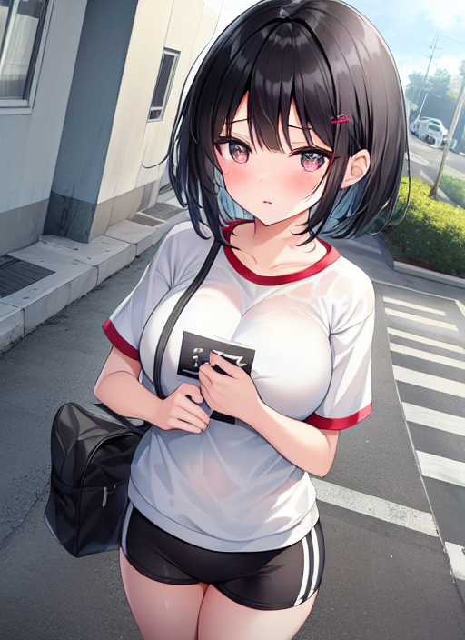

校章のマーク
とある日の夕方、体操服姿で歩いている一人の少年。
彼は、上丸渕小学校に通う５年生の瀬戸あつきで、学校の部活を終えて家に帰るところであった。
「さて、早く帰ってゴハンを食べるぞー。」
すると、通学路の途中であつきはあるものを見つけた。
「なんだろう、これ？」
それは、どこかの学校の校章ようなマークが道路幅全体に描いてあった。
「うーん、もしかして玉野中の校章かな？」
マークをよく見ると、『玉』と『中』の字を図案化したもののようで、あつきはそこから兄が通う玉野中の校章と判断したのだった。
「どうしよう…。踏まずに飛び越えたいなあ。」
あつきは校章を踏まずに通りすぎようと思ったが、とてもあつきのジャンプ力では厳しいようだ。
「まあ、諦めてそのまま行くかな。」
結局あつきはジャンプするのはやめて、校章に足を踏み入れたのだった。
すると、あつきは急に動きを止めた。
「あれっ？ 足が動かない！？」
必死に動かそうとしてもまったくびくともせず、あつきに焦りが込み上げてくる。
「えっ！？ 僕、どうなってるの！？」
どうすることもできずに立ったままのあつき。
だが、そんなあつきに変化が訪れる。
スポーツ刈りの髪が肩くらいまで伸びて、女子のショートボブとなって、凛々しい男子の顔つきも、二重でかわいい目に潤いのある唇、スラッとした小鼻、プニプニとした肌触りの顔つきになる。
腕や足の筋肉もほとんどが脂肪に変わり、生えかけたムダ毛はきれいさっぱりとなくなった。
下半身のアレは、ブルブル震えながら体内に吸収されてしまい、膨らみのない女子の下半身となり、お尻がむくむくと膨らんでいく。
胸元に注目すると、むくむくと２つの丘が作られていき、いまにでも体操服を破るのではないかというほどだ。
『僕…私、どうなってるの…？』
からだが作り替えられていることにより、あつきの思考も女子のものに変化が進んだのだった。
からだの変化が終わり、今度は服の変化が始まった。
肌着のタンクトップが一瞬でピンクのブラジャーに変わり、あつきの巨乳を支え始める。
下着のブリーフも一瞬でピンクのショーツになり、アレのない女子の下半身を包み隠した。
着ていた体操服は若干サイズが大きくなり、真っ白だったものが、袖口が赤色で縁取られていった。
また、胸元にプリントされた上丸渕小の校章は玉野中の校章に書き換えられ、サインペンで書いた『瀬戸あつき』の名前が、『瀬戸』と名字だけ刺繍されたものに変わった。
穿いていたハーフパンツも変化が表れて、今どきどこの中学校も採用していない紺のブルマに変わり、靴下と靴は白のものになっていった。
そして、肩に掛けていたランドセルは玉野中の校章の入ったスクールバッグに変わり、すべての変化が終わった。
『私は上丸渕… 玉野中の２年３組… 瀬戸あおい…』
校章を踏んだことによって小学生だったあつきは、玉野中に通う女子生徒へと変身したのだった。
「あれっ？ 私、何してたんだっけ？」
声やしゃべり方もあつきだったものとは違い、少年の面影はどこにも見当たらない。
「そうだった！ うちに帰って塾に行く準備をしないと。」
あつきだった女の子は、自分が変身したことを忘れたようで、もはや頭の中はこれから塾に行くことだけを考えている様子だ。
「とりあえず、急がないと塾に遅れちゃう！」
そう言って、彼女は急いで家へと向かって行った。
その後、家に着いたあつき改め瀬戸あおいは、学校の荷物を置いて体操服のまま塾へ向かった。
すると、他の中学に通う塾生や塾の講師にあおいの体操服姿、特にブルマに注目が集まり、あおいは塾内で一躍有名人となるのだった。
それ以降あおいは、体操服姿で注目されたことに快感？を覚えるようになり、学校あるなしに関わらず、常に体操服で塾に通うようになったのだった。